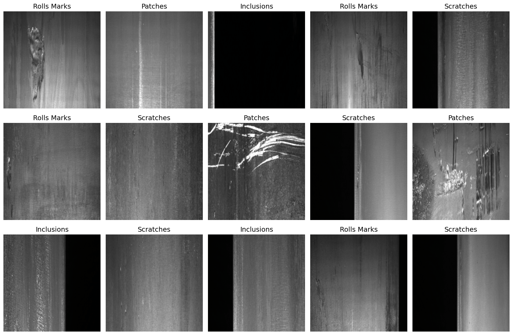
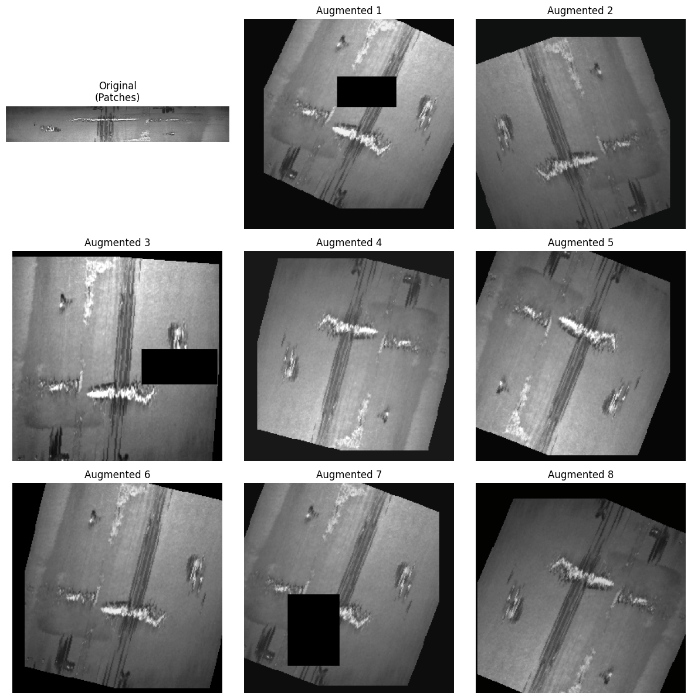
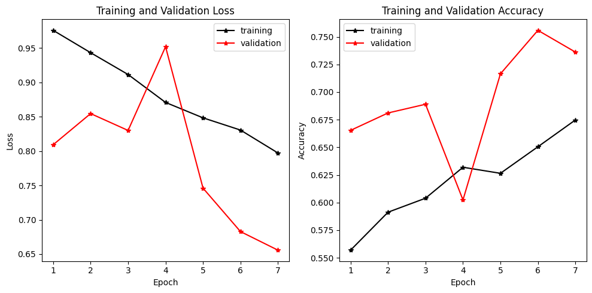
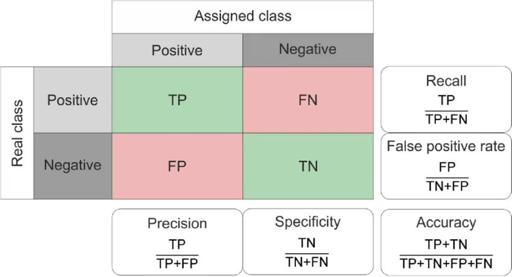
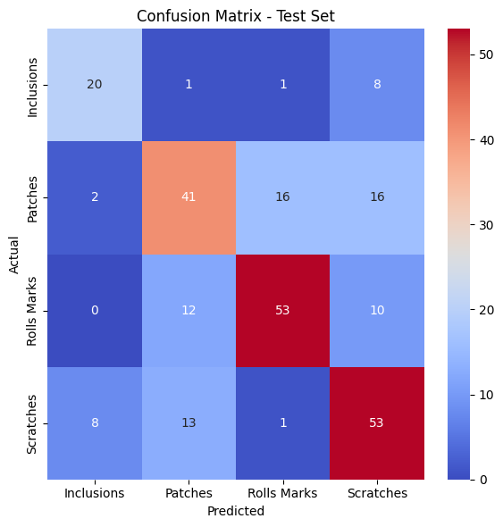
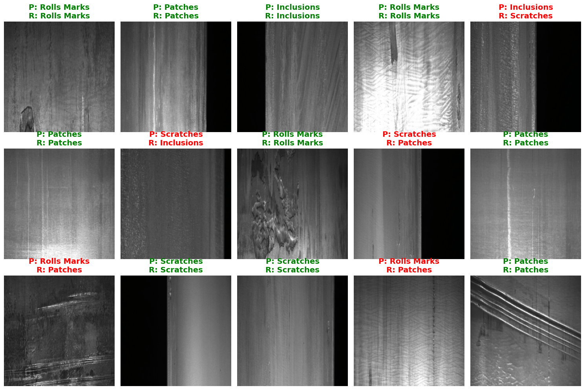
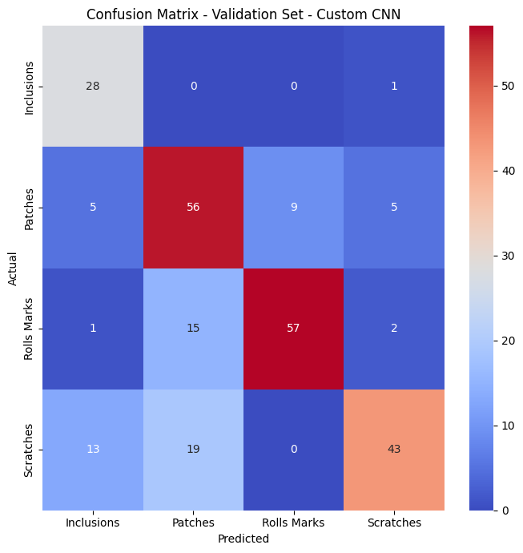

Hands-on: Multiclass Steel Defect Classification¶
Local Environment Setup¶
If you are running this notebook locally, first create a virtual environment and install the required libraries.
python -m venv workshop-env
source workshop-env/bin/activate
python -m pip install --upgrade pip
pip install torch torchvision torchaudio pandas matplotlib scikit-learn seaborn torchsummary
If you are using the LUMI notebook environment, simply select the Python 3 kernel and run the cells.
import os
import sys
print(sys.executable)
/usr/bin/python3
import os
import numpy as np
import pandas as pd
import matplotlib.pyplot as plt
import seaborn as sns
import time
import torch
import torch.nn as nn
import torch.optim as optim
from torch.utils.data import DataLoader
import torchvision.transforms as transforms
from torchvision import datasets, models
from torchinfo import summary
from sklearn.metrics import classification_report, confusion_matrix
from sklearn.model_selection import train_test_split
# Set device configuration
device = torch.device('cuda' if torch.cuda.is_available() else 'cpu')
print(f"Using device: {device}")
# Read information about each library. help(models), models?, print(models.__doc__), models(shift+tab)
Using device: cuda
Dataset Setup: Severstal Defect Dataset¶
We use the Severstal: Steel Defect Detection dataset, containing 200 images each of 4 defect types:
Scratches: Surface scratches and abrasions
Inclusions: Foreign particles embedded in steel
Patches: Localized surface irregularities
Rolls Marks: Marks from the rolling process
Directory structure:
single_class_sampled/
├── Scratches/
├── Inclusions/
├── Patches/
└── Rolls Marks/
# Define path to dataset
dataset_path = r"/projappl/project_465002387/DEEP_Inspection_Material_Science/data/single_class_sampled"
if not os.path.exists(dataset_path):
print(f"Error: {dataset_path} folder not found!")
else:
print(f"Dataset path: {os.path.abspath(dataset_path)}")
Dataset path: /pfs/lustrep4/projappl/project_465002387/DEEP_Inspection_Material_Science/data/single_class_sampled
# Get sorted class names
class_names = sorted(os.listdir(dataset_path))
print(f"Classes found: {class_names}")
print(f"Number of classes: {len(class_names)}")
# Count images per class
for class_name in class_names:
class_path = os.path.join(dataset_path, class_name)
num_images = len([f for f in os.listdir(class_path) if f.endswith(('.jpg', '.jpeg', '.png'))])
print(f"{class_name}: {num_images} images")
Classes found: ['Inclusions', 'Patches', 'Rolls Marks', 'Scratches']
Number of classes: 4
Inclusions: 195 images
Patches: 500 images
Rolls Marks: 500 images
Scratches: 500 images
# Load dataset in batches
BATCH_SIZE = 32
IMAGE_SIZE = 255
# PyTorch transforms (normalize with ImageNet stats for transfer learning)
base_transform = transforms.Compose([
transforms.Resize((IMAGE_SIZE, IMAGE_SIZE)),
transforms.ToTensor(),
transforms.Normalize(mean=[0.485, 0.456, 0.406],
std=[0.229, 0.224, 0.225])
])
full_dataset = datasets.ImageFolder(root=dataset_path,
transform=base_transform)
# Extract all images and labels as arrays for splitting
all_indices = list(range(len(full_dataset)))
all_labels = [full_dataset.targets[i] for i in all_indices]
# First split: 70% train, 30% holdout (val + test)
train_idx, holdout_idx = train_test_split(
all_indices, test_size=0.3, random_state=0, stratify=all_labels
)
holdout_labels = [all_labels[i] for i in holdout_idx]
# Second split: 15% val, 15% test
val_idx, test_idx = train_test_split(
holdout_idx, test_size=0.5, random_state=0, stratify=holdout_labels
)
# Subset samplers
from torch.utils.data import Subset
train_dataset = Subset(full_dataset, train_idx)
val_dataset = Subset(full_dataset, val_idx)
test_dataset = Subset(full_dataset, test_idx)
train_loader = DataLoader(train_dataset, batch_size=BATCH_SIZE, shuffle=True, num_workers=0)
val_loader = DataLoader(val_dataset, batch_size=BATCH_SIZE, shuffle=False, num_workers=0)
test_loader = DataLoader(test_dataset, batch_size=BATCH_SIZE, shuffle=False, num_workers=0)
print(f"Total images: {len(full_dataset)}")
print(f"Training samples: {len(train_dataset)} ({len(train_dataset)/len(full_dataset)*100:.1f}%)")
print(f"Validation samples: {len(val_dataset)} ({len(val_dataset)/len(full_dataset)*100:.1f}%)")
print(f"Test samples: {len(test_dataset)} ({len(test_dataset)/len(full_dataset)*100:.1f}%)")
Total images: 1695
Training samples: 1186 (70.0%)
Validation samples: 254 (15.0%)
Test samples: 255 (15.0%)
# Visualize sample images from training set
# (un-normalize for display)
inv_normalize = transforms.Normalize(
mean=[-0.485/0.229, -0.456/0.224, -0.406/0.225],
std=[1/0.229, 1/0.224, 1/0.225]
)
plt.figure(figsize=(15, 10))
images_batch, labels_batch = next(iter(train_loader))
for i in range(min(15, len(images_batch))):
ax = plt.subplot(3, 5, i + 1)
img = inv_normalize(images_batch[i]).permute(1, 2, 0).numpy()
img = np.clip(img, 0, 1)
plt.imshow(img)
plt.title(class_names[labels_batch[i].item()], fontsize=14)
plt.axis('off')
plt.tight_layout()
plt.show()

Data Augmentation¶
augment_transform = transforms.Compose([
transforms.Resize((IMAGE_SIZE, IMAGE_SIZE)),
transforms.RandomHorizontalFlip(p=0.5),
transforms.RandomVerticalFlip(p=0.5),
transforms.RandomRotation(degrees=30),
transforms.RandomAffine(degrees=0, translate=(0.08, 0.08), scale=(0.9, 1.1)),
transforms.ColorJitter(brightness=0.25, contrast=0.25),
transforms.RandomApply([transforms.GaussianBlur(kernel_size=3)], p=0.2),
transforms.ToTensor(),
transforms.RandomErasing(p=0.20, scale=(0.02, 0.10)),
transforms.Normalize(mean=[0.485, 0.456, 0.406],
std=[0.229, 0.224, 0.225]),
])
from PIL import Image
import matplotlib.pyplot as plt
sample_dataset_index = train_dataset.indices[0]
sample_path, sample_label = full_dataset.samples[sample_dataset_index]
pil_img = Image.open(sample_path).convert("RGB")
inv_normalize = transforms.Normalize(
mean=[-0.485 / 0.229, -0.456 / 0.224, -0.406 / 0.225],
std=[1 / 0.229, 1 / 0.224, 1 / 0.225],
)
fig, axes = plt.subplots(3, 3, figsize=(12, 12))
axes = axes.flatten()
images = [pil_img] + [augment_transform(pil_img) for _ in range(8)]
titles = [f"Original\n({class_names[sample_label]})"] + [f"Augmented {i}" for i in range(1, 9)]
for ax, image, title in zip(axes, images, titles):
if isinstance(image, torch.Tensor):
image = inv_normalize(image).permute(1, 2, 0).numpy()
image = np.clip(image, 0, 1)
ax.imshow(image)
ax.set_title(title)
ax.axis("off")
plt.tight_layout()
plt.show()

# --- Apply augmentation to the training dataset -----
from torch.utils.data import Subset, ConcatDataset
def augment_dataset(dataset, multiplier):
# Recover the original ImageFolder root and this subset's indices
root = dataset.dataset.root
indices = dataset.indices
# Augmented "view" of the same folder, same samples, new transform
augmented_base = datasets.ImageFolder(root=root, transform=augment_transform)
augmented_subset = Subset(augmented_base, indices)
return ConcatDataset([augmented_subset] * multiplier)
# Reassign the training loader (val/test loaders unchanged)
AUG_MULTIPLIER = 4
train_dataset2 = augment_dataset(train_dataset, multiplier=AUG_MULTIPLIER)
train_loader = DataLoader(train_dataset2, batch_size=BATCH_SIZE, shuffle=True, num_workers=0)
print(f"Training samples: {len(train_dataset2)} ({AUG_MULTIPLIER}x, on-the-fly augmentation)")
print(f"Validation samples: {len(val_dataset)} ")
print(f"Test samples: {len(test_dataset)} ")
Training samples: 4744 (4x, on-the-fly augmentation)
Validation samples: 254
Test samples: 255
Assignment: Original vs Customized LeNet Models¶
In this exercise, you will compare the performance of the original LeNet-5 model with a customized LeNet model.
Tasks¶
1. Train the Original LeNet-5¶
Train the model on the given dataset.
Report:
Training/validation loss
Training/validation accuracy
Test accuracy
2. Build a Customized LeNet¶
Modify the original architecture by replacing:
Original |
Customized |
|---|---|
|
|
Average Pooling |
Max Pooling |
Sigmoid |
ReLU |
Xavier weight initialization |
PyTorch default initialization |
For read about weight initialization in neural networks, including Xavier (Glorot) Initialization and He Initialization use this article:
🔗 Weight Initialization in Neural Networks: Xavier and He Initialization
3. Compare the Models¶
Compare both models based on:
Architecture and parameters
Training performance
Validation and test accuracy
Briefly discuss the differences in performance.
def init_cnn(module):
"""Xavier initialization for Conv2d and Linear layers."""
if isinstance(module, (nn.Conv2d, nn.Linear)):
nn.init.xavier_uniform_(module.weight)
if module.bias is not None:
nn.init.zeros_(module.bias)
class LeNetOriginal(nn.Module):
def __init__(self, num_classes=4):
super(LeNetOriginal, self).__init__()
self.conv1 = nn.LazyConv2d(6, kernel_size=5, padding=2)
self.pool1 = nn.AvgPool2d(kernel_size=2, stride=2)
self.conv2 = nn.LazyConv2d(16, kernel_size=5, padding=0)
self.pool2 = nn.AvgPool2d(kernel_size=2, stride=2)
self.fc1 = nn.LazyLinear(120)
self.fc2 = nn.LazyLinear(84)
self.fc3 = nn.LazyLinear(num_classes)
self.sigmoid = nn.Sigmoid()
def forward(self, x):
x = self.sigmoid(self.conv1(x))
x = self.pool1(x)
x = self.sigmoid(self.conv2(x))
x = self.pool2(x)
x = x.flatten(1)
x = self.sigmoid(self.fc1(x))
x = self.sigmoid(self.fc2(x))
x = self.fc3(x)
return x
model_original = LeNetOriginal(num_classes=len(class_names)).to(device)
summary(model_original, input_size=(BATCH_SIZE, 3, IMAGE_SIZE, IMAGE_SIZE),depth=10,
col_names=["input_size", "output_size", "kernel_size", "num_params"])
# Conv2D output size formula: Output = ((n - f + 2p) / s + 1, (n - f + 2p) / s + 1, out_channels)
# Parameters = (f * f * output_channels) + output_channels (bias)
# Memory (VRAM/RAM) required:
# Input data load: batch_size × channels × height × width × 4 bytes (float32)
# Model Training: forward/backward propagation (activations + gradients)
# Model Inference: Model total parameters × 4 bytes (float32)
Solution for customized LeNet architecture¶
# Define LeNet model in PyTorch
class LeNet(nn.Module):
def __init__(self, num_classes=4):
super(LeNet, self).__init__()
# First convolutional layer
self.conv1 = nn.Conv2d(3, 6, kernel_size=5, padding=0)
self.pool1 = nn.MaxPool2d(kernel_size=2, stride=2)
# Second convolutional layer
self.conv2 = nn.Conv2d(6, 16, kernel_size=5, padding=0)
self.pool2 = nn.MaxPool2d(kernel_size=2, stride=2)
# Fully connected layers
self.fc1 = nn.Linear(16 * 60 * 60, 120) # if you dont know how to set: self.fc1 = nn.LazyLinear(120)
self.fc2 = nn.Linear(120, 84)
self.fc3 = nn.Linear(84, num_classes)
self.relu = nn.ReLU()
def forward(self, x):
x = self.relu(self.conv1(x))
x = self.pool1(x)
x = self.relu(self.conv2(x))
x = self.pool2(x)
x = x.view(x.size(0), -1)
x = self.relu(self.fc1(x))
x = self.relu(self.fc2(x))
x = self.fc3(x)
return x
# Create model
model_lenet = LeNet(num_classes=len(class_names)).to(device)
print(f"Input shape: [{BATCH_SIZE}, 3, {IMAGE_SIZE}, {IMAGE_SIZE}]")
from torchinfo import summary
summary(
model_lenet,
input_size=(BATCH_SIZE, 3, IMAGE_SIZE, IMAGE_SIZE),
depth=10,
col_names=["input_size", "output_size", "kernel_size", "num_params"])
Input shape: [32, 3, 255, 255]
============================================================================================================================================
Layer (type:depth-idx) Input Shape Output Shape Kernel Shape Param #
============================================================================================================================================
LeNet [32, 3, 255, 255] [32, 4] -- --
├─Conv2d: 1-1 [32, 3, 255, 255] [32, 6, 251, 251] [5, 5] 456
├─ReLU: 1-2 [32, 6, 251, 251] [32, 6, 251, 251] -- --
├─MaxPool2d: 1-3 [32, 6, 251, 251] [32, 6, 125, 125] 2 --
├─Conv2d: 1-4 [32, 6, 125, 125] [32, 16, 121, 121] [5, 5] 2,416
├─ReLU: 1-5 [32, 16, 121, 121] [32, 16, 121, 121] -- --
├─MaxPool2d: 1-6 [32, 16, 121, 121] [32, 16, 60, 60] 2 --
├─Linear: 1-7 [32, 57600] [32, 120] -- 6,912,120
├─ReLU: 1-8 [32, 120] [32, 120] -- --
├─Linear: 1-9 [32, 120] [32, 84] -- 10,164
├─ReLU: 1-10 [32, 84] [32, 84] -- --
├─Linear: 1-11 [32, 84] [32, 4] -- 340
============================================================================================================================================
Total params: 6,925,496
Trainable params: 6,925,496
Non-trainable params: 0
Total mult-adds (Units.GIGABYTES): 2.27
============================================================================================================================================
Input size (MB): 24.97
Forward/backward pass size (MB): 156.79
Params size (MB): 27.70
Estimated Total Size (MB): 209.46
============================================================================================================================================
# Training function
def train_epoch(model, train_loader, criterion, optimizer, device):
model.train()
total_loss = 0.0
correct = 0
total = 0
for images, labels in train_loader:
images = images.to(device)
labels = labels.to(device)
optimizer.zero_grad()
outputs = model(images)
loss = criterion(outputs, labels)
loss.backward()
optimizer.step()
total_loss += loss.item()
_, predicted = torch.max(outputs.data, 1)
total += labels.size(0)
correct += (predicted == labels).sum().item()
avg_loss = total_loss / len(train_loader)
accuracy = correct / total
return avg_loss, accuracy
# Validation function
def validate(model, val_loader, criterion, device):
model.eval()
total_loss = 0.0
correct = 0
total = 0
with torch.no_grad():
for images, labels in val_loader:
images = images.to(device)
labels = labels.to(device)
outputs = model(images)
loss = criterion(outputs, labels)
total_loss += loss.item()
_, predicted = torch.max(outputs.data, 1)
total += labels.size(0)
correct += (predicted == labels).sum().item()
avg_loss = total_loss / len(val_loader)
accuracy = correct / total
return avg_loss, accuracy
# Training parameters
EPOCHS = 7
criterion = nn.CrossEntropyLoss()
optimizer = optim.Adam(model_lenet.parameters(), lr=0.001)
# Training loop
history = {
'loss': [],
'val_loss': [],
'accuracy': [],
'val_accuracy': []
}
# Start timer
start_time = time.time()
for epoch in range(EPOCHS):
train_loss, train_acc = train_epoch(model_lenet, train_loader, criterion, optimizer, device)
val_loss, val_acc = validate(model_lenet, val_loader, criterion, device)
history['loss'].append(train_loss)
history['val_loss'].append(val_loss)
history['accuracy'].append(train_acc)
history['val_accuracy'].append(val_acc)
print(f"Epoch {epoch+1}/{EPOCHS} - Loss: {train_loss:.4f}, Acc: {train_acc:.4f}, Val Loss: {val_loss:.4f}, Val Acc: {val_acc:.4f}")
# Training time
end_time = time.time()
print(f"\nTotal training time: {(end_time-start_time):.2f} seconds")
print(f"Average time per epoch: {(end_time-start_time)/EPOCHS:.2f} seconds")
Epoch 1/7 - Loss: 0.9758, Acc: 0.5569, Val Loss: 0.8092, Val Acc: 0.6654
Epoch 2/7 - Loss: 0.9432, Acc: 0.5913, Val Loss: 0.8546, Val Acc: 0.6811
Epoch 3/7 - Loss: 0.9115, Acc: 0.6039, Val Loss: 0.8300, Val Acc: 0.6890
Epoch 4/7 - Loss: 0.8708, Acc: 0.6320, Val Loss: 0.9520, Val Acc: 0.6024
Epoch 5/7 - Loss: 0.8484, Acc: 0.6265, Val Loss: 0.7460, Val Acc: 0.7165
Epoch 6/7 - Loss: 0.8306, Acc: 0.6505, Val Loss: 0.6828, Val Acc: 0.7559
Epoch 7/7 - Loss: 0.7972, Acc: 0.6747, Val Loss: 0.6558, Val Acc: 0.7362
Total training time: 269.89 seconds
Average time per epoch: 38.56 seconds
# Save the model
torch.save(model_lenet.state_dict(), 'lenet_model.pth')
print("Model saved as lenet_model.pth")
Model saved as lenet_model.pth
# Plot training history - Loss and Accuracy
plt.figure(figsize=(10, 5))
plt.subplot(1, 2, 1)
plt.plot(np.arange(1, EPOCHS+1), history['loss'], color='black', label='training', marker='*')
plt.plot(np.arange(1, EPOCHS+1), history['val_loss'], color='red', label='validation', marker='*')
plt.xlabel('Epoch')
plt.ylabel('Loss')
plt.legend()
plt.title('Training and Validation Loss')
plt.subplot(1, 2, 2)
plt.plot(np.arange(1, EPOCHS+1), history['accuracy'], color='black', label='training', marker='*')
plt.plot(np.arange(1, EPOCHS+1), history['val_accuracy'], color='red', label='validation', marker='*')
plt.xlabel('Epoch')
plt.ylabel('Accuracy')
plt.legend()
plt.title('Training and Validation Accuracy')
plt.tight_layout()
plt.show()

Model Evaluation¶
After training the model, we evaluate its performance using different classification metrics.
The confusion matrix provides a detailed view of the model predictions by comparing the actual classes with the predicted classes. It helps identify correctly classified samples and classification errors between different defect categories.

Figure adapted from Rothe et al., DOI: 10.1007/s00521-014-1685-1.
The following performance measures are derived from the confusion matrix:
Accuracy: How often the model gives the correct prediction overall.
Precision: When the model says “this is a defect type X”, how often is it correct? (avoids false alarms, Focuses on predicted by the model)
Recall (Detection Rate): Of all actual defect type X samples, how many did the model find? (avoids missed defects, Focuses on actual samples ). In quality control, recall is often especially important because missing a defect can cause production problems.
F1-score: A single score that balances correct detections and false alarms.
#compute the confusion matrix and classification report for test dataset
# If you want to inference the model from the saved model:
# model_lenet = torch.load("lenet_full_model.pth", map_location=device)
# model_lenet.to(device)
# model_lenet.eval()
model_lenet.eval()
ypred_tot = []
label_tot = []
with torch.no_grad():
for images, labels in test_loader:
images = images.to(device)
outputs = model_lenet(images)
_, predicted = torch.max(outputs, 1)
ypred_tot.extend(predicted.cpu().numpy())
label_tot.extend(labels.numpy())
# Create confusion matrix
cm = confusion_matrix(label_tot, ypred_tot)
# Display confusion matrix as heatmap
plt.figure(figsize=(6, 6))
sns.heatmap(cm, annot=True, cmap="coolwarm", xticklabels=class_names, yticklabels=class_names, fmt='d')
plt.xlabel('Predicted')
plt.ylabel('Actual')
plt.title('Confusion Matrix - Test Set')
plt.tight_layout()
plt.show()
# Print classification report
print("\nClassification Report - Test Set:")
print(classification_report(label_tot, ypred_tot, labels=range(len(class_names)), target_names=class_names))

Classification Report - Test Set:
precision recall f1-score support
Inclusions 0.67 0.67 0.67 30
Patches 0.61 0.55 0.58 75
Rolls Marks 0.75 0.71 0.73 75
Scratches 0.61 0.71 0.65 75
accuracy 0.65 255
macro avg 0.66 0.66 0.66 255
weighted avg 0.66 0.65 0.65 255
# Visualize predictions on test set
inv_normalize = transforms.Normalize(
mean=[-0.485/0.229, -0.456/0.224, -0.406/0.225],
std=[1/0.229, 1/0.224, 1/0.225]
)
plt.figure(figsize=(15, 10))
model_lenet.eval()
with torch.no_grad():
images_batch, labels_batch = next(iter(test_loader))
outputs = model_lenet(images_batch.to(device))
_, ypred = torch.max(outputs, 1)
for i in range(min(15, len(images_batch))):
ax = plt.subplot(3, 5, i + 1)
img = inv_normalize(images_batch[i]).permute(1, 2, 0).numpy()
img = np.clip(img, 0, 1)
plt.imshow(img)
actual_class = labels_batch[i].item()
pred_class = ypred[i].item()
color = 'green' if actual_class == pred_class else 'red'
plt.title(
f"P: {class_names[pred_class]}\nR: {class_names[actual_class]}",
color=color,
fontweight='bold',
fontsize=14
)
plt.axis('off')
plt.tight_layout()
plt.show()
print("\n" + "="*60)
print("EVALUATING ON TEST SET")
test_loss, test_acc = validate(model_lenet, test_loader, criterion, device)
print(f"Test Loss: {test_loss:.4f}")
print(f"Test Accuracy: {test_acc:.4f} ({test_acc*100:.2f}%)")

============================================================
EVALUATING ON TEST SET
Test Loss: 0.7964
Test Accuracy: 0.6549 (65.49%)
Assignment: Applying and Customizing AlexNet¶
In this assignment, you will apply the AlexNet architecture to the given dataset and investigate how architectural changes affect model performance.
Tasks¶
Train the AlexNet model on the dataset and evaluate its performance.
Customize the model architecture by modifying:
Number of convolutional filters (
c1–c5)Fully connected layer sizes (
fc1,fc2)Dropout rate
Analyze the results:
Compare model performance with different configurations.
Explain how these changes affect accuracy, training behavior, and generalization.
Discuss how AlexNet can be adapted for a specific dataset.
Solution for customized AlexNet architecture¶
class CustomAlexNet(nn.Module):
def __init__(
self,
num_classes=4,
c1=96,
c2=256,
c3=384,
c4=384,
c5=256,
fc1=1024,
fc2=512,
dropout=0.5
):
super().__init__()
self.features = nn.Sequential(
nn.Conv2d(3, c1, kernel_size=11, stride=4, padding=1),
nn.BatchNorm2d(c1),
nn.ReLU(inplace=True),
nn.MaxPool2d(kernel_size=3, stride=2),
nn.Conv2d(c1, c2, kernel_size=5, padding=2),
nn.BatchNorm2d(c2),
nn.ReLU(inplace=True),
nn.MaxPool2d(kernel_size=3, stride=2),
nn.Conv2d(c2, c3, kernel_size=3, padding=1),
nn.BatchNorm2d(c3),
nn.ReLU(inplace=True),
nn.Conv2d(c3, c4, kernel_size=3, padding=1),
nn.BatchNorm2d(c4),
nn.ReLU(inplace=True),
nn.Conv2d(c4, c5, kernel_size=3, padding=1),
nn.BatchNorm2d(c5),
nn.ReLU(inplace=True),
nn.MaxPool2d(kernel_size=3, stride=2),
)
self.classifier = nn.Sequential(
nn.AdaptiveAvgPool2d((6, 6)),
nn.Flatten(),
nn.Linear(c5 * 6 * 6, fc1),
nn.BatchNorm1d(fc1),
nn.ReLU(inplace=True),
nn.Dropout(dropout),
nn.Linear(fc1, fc2),
nn.BatchNorm1d(fc2),
nn.ReLU(inplace=True),
nn.Dropout(dropout),
nn.Linear(fc2, num_classes),
)
def forward(self, x):
x = self.features(x)
x = self.classifier(x)
return x
model_custom = CustomAlexNet(num_classes=len(class_names)).to(device)
summary(model_custom, input_size=(BATCH_SIZE, 3, IMAGE_SIZE, IMAGE_SIZE),depth=10,
col_names=["input_size", "output_size", "kernel_size", "num_params"])
============================================================================================================================================
Layer (type:depth-idx) Input Shape Output Shape Kernel Shape Param #
============================================================================================================================================
CustomAlexNet [32, 3, 255, 255] [32, 4] -- --
├─Sequential: 1-1 [32, 3, 255, 255] [32, 256, 6, 6] -- --
│ └─Conv2d: 2-1 [32, 3, 255, 255] [32, 96, 62, 62] [11, 11] 34,944
│ └─BatchNorm2d: 2-2 [32, 96, 62, 62] [32, 96, 62, 62] -- 192
│ └─ReLU: 2-3 [32, 96, 62, 62] [32, 96, 62, 62] -- --
│ └─MaxPool2d: 2-4 [32, 96, 62, 62] [32, 96, 30, 30] 3 --
│ └─Conv2d: 2-5 [32, 96, 30, 30] [32, 256, 30, 30] [5, 5] 614,656
│ └─BatchNorm2d: 2-6 [32, 256, 30, 30] [32, 256, 30, 30] -- 512
│ └─ReLU: 2-7 [32, 256, 30, 30] [32, 256, 30, 30] -- --
│ └─MaxPool2d: 2-8 [32, 256, 30, 30] [32, 256, 14, 14] 3 --
│ └─Conv2d: 2-9 [32, 256, 14, 14] [32, 384, 14, 14] [3, 3] 885,120
│ └─BatchNorm2d: 2-10 [32, 384, 14, 14] [32, 384, 14, 14] -- 768
│ └─ReLU: 2-11 [32, 384, 14, 14] [32, 384, 14, 14] -- --
│ └─Conv2d: 2-12 [32, 384, 14, 14] [32, 384, 14, 14] [3, 3] 1,327,488
│ └─BatchNorm2d: 2-13 [32, 384, 14, 14] [32, 384, 14, 14] -- 768
│ └─ReLU: 2-14 [32, 384, 14, 14] [32, 384, 14, 14] -- --
│ └─Conv2d: 2-15 [32, 384, 14, 14] [32, 256, 14, 14] [3, 3] 884,992
│ └─BatchNorm2d: 2-16 [32, 256, 14, 14] [32, 256, 14, 14] -- 512
│ └─ReLU: 2-17 [32, 256, 14, 14] [32, 256, 14, 14] -- --
│ └─MaxPool2d: 2-18 [32, 256, 14, 14] [32, 256, 6, 6] 3 --
├─Sequential: 1-2 [32, 256, 6, 6] [32, 4] -- --
│ └─AdaptiveAvgPool2d: 2-19 [32, 256, 6, 6] [32, 256, 6, 6] -- --
│ └─Flatten: 2-20 [32, 256, 6, 6] [32, 9216] -- --
│ └─Linear: 2-21 [32, 9216] [32, 1024] -- 9,438,208
│ └─BatchNorm1d: 2-22 [32, 1024] [32, 1024] -- 2,048
│ └─ReLU: 2-23 [32, 1024] [32, 1024] -- --
│ └─Dropout: 2-24 [32, 1024] [32, 1024] -- --
│ └─Linear: 2-25 [32, 1024] [32, 512] -- 524,800
│ └─BatchNorm1d: 2-26 [32, 512] [32, 512] -- 1,024
│ └─ReLU: 2-27 [32, 512] [32, 512] -- --
│ └─Dropout: 2-28 [32, 512] [32, 512] -- --
│ └─Linear: 2-29 [32, 512] [32, 4] -- 2,052
============================================================================================================================================
Total params: 13,718,084
Trainable params: 13,718,084
Non-trainable params: 0
Total mult-adds (Units.GIGABYTES): 41.75
============================================================================================================================================
Input size (MB): 24.97
Forward/backward pass size (MB): 410.45
Params size (MB): 54.87
Estimated Total Size (MB): 490.30
============================================================================================================================================
# Training parameters for custom model
import time
EPOCHS = 7
criterion = nn.CrossEntropyLoss()
optimizer = optim.Adam(model_custom.parameters(), lr=0.001)
# Training loop
history_custom = {
'loss': [],
'val_loss': [],
'accuracy': [],
'val_accuracy': []
}
start_time = time.time()
for epoch in range(EPOCHS):
train_loss, train_acc = train_epoch(model_custom, train_loader, criterion, optimizer, device)
val_loss, val_acc = validate(model_custom, val_loader, criterion, device)
history_custom['loss'].append(train_loss)
history_custom['val_loss'].append(val_loss)
history_custom['accuracy'].append(train_acc)
history_custom['val_accuracy'].append(val_acc)
print(f"Epoch {epoch+1}/{EPOCHS} - Loss: {train_loss:.4f}, Acc: {train_acc:.4f}, Val Loss: {val_loss:.4f}, Val Acc: {val_acc:.4f}")
# Training time
end_time = time.time()
print(f"\nTotal training time: {(end_time-start_time):.2f} seconds")
print(f"Average time per epoch: {(end_time-start_time)/EPOCHS:.2f} seconds")
Epoch 1/7 - Loss: 1.1356, Acc: 0.4654, Val Loss: 0.9434, Val Acc: 0.5669
Epoch 2/7 - Loss: 0.9945, Acc: 0.5575, Val Loss: 0.9210, Val Acc: 0.5394
Epoch 3/7 - Loss: 0.9678, Acc: 0.5729, Val Loss: 0.7830, Val Acc: 0.6929
Epoch 4/7 - Loss: 0.9196, Acc: 0.6031, Val Loss: 0.7833, Val Acc: 0.6732
Epoch 5/7 - Loss: 0.8756, Acc: 0.6267, Val Loss: 0.7084, Val Acc: 0.7244
Epoch 6/7 - Loss: 0.8691, Acc: 0.6364, Val Loss: 0.9182, Val Acc: 0.6142
Epoch 7/7 - Loss: 0.8330, Acc: 0.6516, Val Loss: 0.6951, Val Acc: 0.7047
Total training time: 276.83 seconds
Average time per epoch: 39.55 seconds
# Compute confusion matrix and classification report on validation data for custom model
model_custom.eval()
ypred_tot = []
label_tot = []
with torch.no_grad():
for images, labels in val_loader:
images = images.to(device)
outputs = model_custom(images)
_, predicted = torch.max(outputs, 1)
ypred_tot.extend(predicted.cpu().numpy())
label_tot.extend(labels.numpy())
# Create confusion matrix
cm = confusion_matrix(label_tot, ypred_tot)
# Display confusion matrix as heatmap
plt.figure(figsize=(7, 7))
sns.heatmap(cm, annot=True, cmap="coolwarm", xticklabels=class_names, yticklabels=class_names, fmt='d')
plt.xlabel('Predicted')
plt.ylabel('Actual')
plt.title('Confusion Matrix - Validation Set - Custom CNN')
plt.tight_layout()
plt.show()
# Print classification report
print("\nClassification Report - Custom CNN:")
print(classification_report(label_tot, ypred_tot, labels=range(len(class_names)), target_names=class_names))

Classification Report - Custom CNN:
precision recall f1-score support
Inclusions 0.60 0.97 0.74 29
Patches 0.62 0.75 0.68 75
Rolls Marks 0.86 0.76 0.81 75
Scratches 0.84 0.57 0.68 75
accuracy 0.72 254
macro avg 0.73 0.76 0.73 254
weighted avg 0.76 0.72 0.72 254